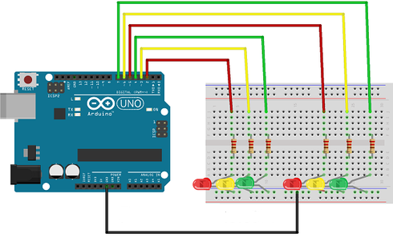
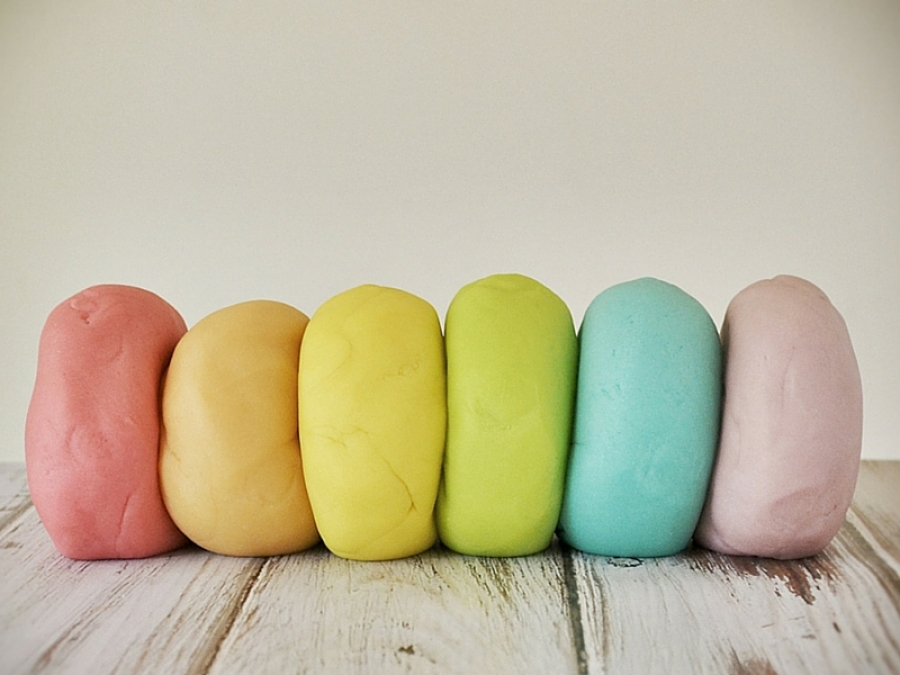
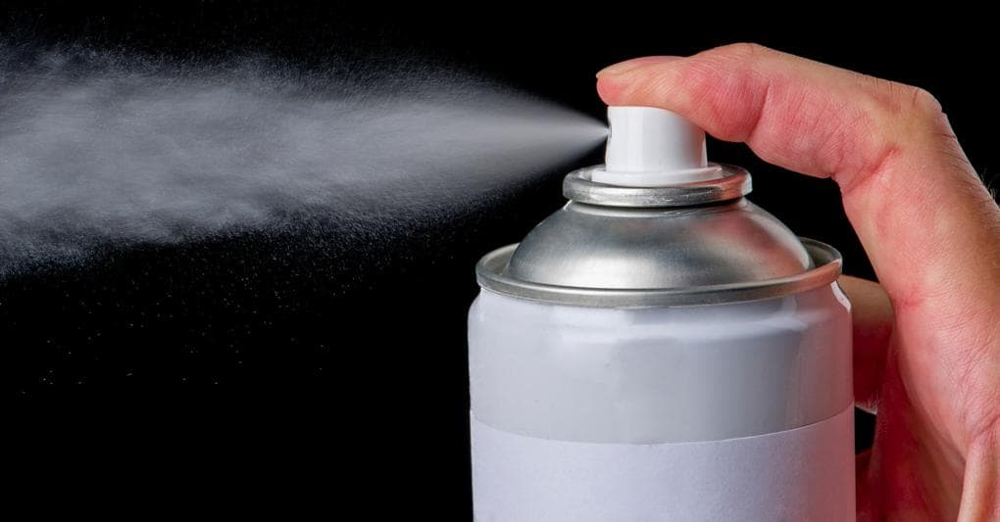
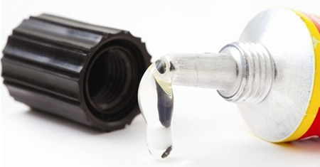
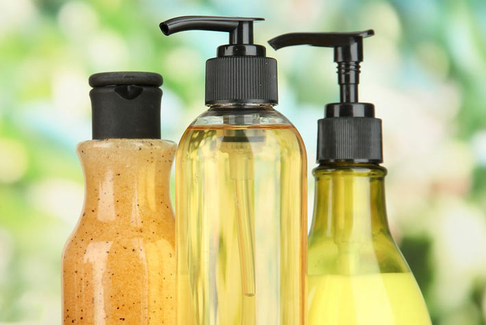
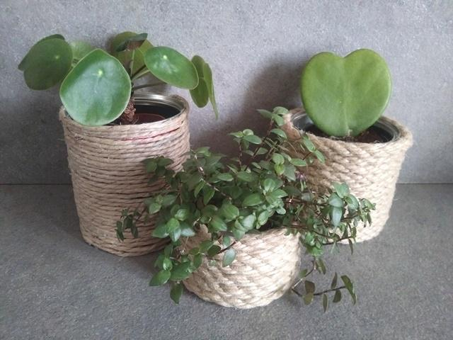
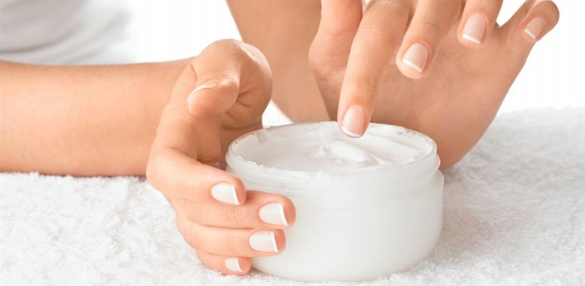

Semaforo con Arduino
Un progetto molto semplice da realizzare, che però serve come lezione per introdurre due componenti fondamentali in elettronica, i led e le resistenze. Per la realizzazione del semaforo ci occoreranno i seguenti elementi:- Arduino Uno
- Breadboard
- 6 Diodi Led (2 rossi, 2 verdi, 2 gialli)
- 6 resistenze da 220 ohm
- Cavetti di collegamento
Ora bisogna creare il circuito seguendo lo schema di collegamento mostrato in figura.
Schema di collegamento
Dopo aver costruito il circuito bisogna scrivere lo sketch sull'IDE di arduino.Più precisamente creiamo il file "semaforo.ino" e inseriamo all'interno questo codice:
1: int rosso1 = 2; 2: int giallo1 = 3; 3: int verde1 = 4; 4: int rosso2 = 5; 5: int giallo2 = 6; 6: int verde2 = 7; 7: void setup () 8: { 9: pinMode(rosso1, OUTPUT); 10: pinMode(giallo1, OUTPUT); 11: pinMode(verde1, OUTPUT); 12: pinMode(rosso2, OUTPUT); 13: pinMode(giallo2, OUTPUT); 14: pinMode(verde2, OUTPUT); 15: } 16: void loop () 17: { 18: digitalWrite (rosso1, HIGH); 19: digitalWrite (verde2, HIGH); 20: digitalWrite (rosso2, LOW); 21: delay (5000); 22: digitalWrite (giallo2, HIGH); 23: delay (5000); 24: digitalWrite (rosso1, LOW); 25: digitalWrite (verde1, HIGH); 26: digitalWrite (verde2, LOW); 27: digitalWrite (giallo2, LOW); 28: digitalWrite (rosso2, HIGH); 29: delay (5000); 30: digitalWrite (giallo1, HIGH); 31: delay (5000); 32: digitalWrite (verde1, LOW); 33: digitalWrite (giallo1, LOW); 34: }
Gel igienizzante mani
Fuori casa o in molte situazioni il gel igienizzante per le mani può tornare molto comodo se non abbiamo a disposizione acqua e sapone. Tutti i giorni impugniamo maniglie toccate da mille altre persone, premiamo tasti, tocchiamo superfici, ci sfioriamo il viso. Conviviamo continuamente con germi e batteri e la loro presenza nell’ambiente e sulle persone è praticamente inevitabile.I gel igienizzanti del supermercato contengono però conservanti, profumi ed emollienti di sintesi che possono risultare aggressivi sulla pelle. In alternativa è possibile usare un gel igienizzante fatto in casa prodotto con pochi ingredienti facilmente reperibili.

Per 1 litro di prodotto è necessario il seguente dosaggio:
- 833 ml alcol etilico al 96%
- 42 ml di acqua ossigenata al 3%
- 15 ml glicerina (glicerolo) al 98%
- acqua distillata (oppure bollita e raffreddata): quanto basta per arrivare a 1 litro
Pasta modellabile
Possiamo creare in casa una pasta modellabile che non ha nulla da invidiare a quella che si trova nei negozi e che i bambini usano in grande quantità. Fare in casa questa pasta è più semplice di quanto si pensi.I vantaggi nel farlo in casa sono principalmente 3:
- è semplicissimo
- può essere colorato e aromatizzato in modo naturale
- è molto economico

Ingredienti
- 2 tazze di farina comune
- mezza tazza di sale fino
- 2 tazze d’acqua bollente
- 2 cucchiai di succo di limone filtrato
- 1 cucchiaio colmo di olio (di oliva, di mais o di girasole)
Possiamo renderlo più durevole “cuocendolo” brevemente: in questo caso basta versare gli ingredienti secchi in un pentolino, unire quelli liquidi mescolando accuratamente e cuocere per un paio di minuti a fuoco dolce continuando a mescolare bene. Una volta raffreddato l’impasto è pronto.
Spray antizanzare
Per evitare di essere punti dalle zanzare basta confonderle facendo leva sull'olfatto, infatti è tramite l'olfatto che riescono a trovare le "prede" nelle loro vicinanze.
Ingredienti e preparazione
Per preparare un semplice spray antizanzare fai da te occorrono:- 85 ml. di acqua minerale non gasata
- 15 ml. di vodka (o alcol per uso alimentare)
- 5 gocce di olio essenziale di citronella
- 3 gocce di olio essenziale di lavanda
- uno spruzzino da 100 ml
- facciamo bollire l’acqua in un pentolino per alcuni minuti
- lasciamo raffreddare l’acqua
- in un bicchierino mescoliamo vodka e oli essenziali
- versiamo il liquido nell’acqua minerale ormai raffreddata
- trasferiamo il tutto nello spruzzino pulito
Colla
La colla può risultare sempre utile per fare qualche lavoretto, quindi vi proponiamo un metodo veloce per farla in casa.
Ingredienti e preparazione
Per fare la colla bastano:- 320 ml. di acqua
- 2 cucchiai di amido di mais
- 2 cucchiai di zucchero
- 1 cucchiaio di aceto
Mettete metà acqua (160 ml.), lo zucchero e l’aceto in un pentolino e scaldate finché il tutto non inizia quasi a sobbollire. In un altro contenitore unite la restante acqua fredda (160 ml.) con l’amido di mais, mescolate accuratamente e versate gradualmente questo composto nel pentolino. Fate bollire a fiamma moderata per un minuto continuando a mescolare. Eventuali grumi possono essere eliminati frullando il composto a freddo per pochissimi istanti.
A questo punto la colla è praticamente pronta. Fatela raffreddare, versatela in contenitori con coperchio e conservatela in frigorifero. La durata è indicativa, se il barattolo viene chiuso ermeticamente la colla può durare per diversi giorni.
Sapone liquido
Questa è una ricetta davvero semplice per creare un ottimo sapone liquido per le mani in pochi minuti e con meno di 1 euro. Questo sapone liquido è un ottimo sostituto della classica saponetta solida.
Ingredienti e procedimento
- 75 grammi di sapone solido di Marsiglia in scaglie
- 1 litro di acqua
- 10 gocce di olio essenziale di lavanda o altro olio essenziale
- 2 cucchiai olio extra vergine di oliva
- 2 cucchiai olio di mandorle dolci
- con un coltello tagliare il sapone in scaglie piccole
- in un pentolino di acciaio far sciogliere il sapone in 1 litro di acqua, mescolando ogni tanto
- quando è sciolto lasciarlo ancora sul fuoco basso per circa 15 minuti mentre sobbolle: dobbiamo ottenere un composto molto liquido, che raffreddandosi si addenserà molto
- spegnere il fuoco
- aggiungere gli ingredienti facoltativi, mescolare e lasciare raffreddare nel pentolino
- mentre il composto si sta raffreddando e addensando, mescolarlo con il minipimer per renderlo più omogeneo
Portavasi
Vi proponiamo di realizzare dei portavasi con barattoli o vecchi vasi rivestendoli con corde e spaghi. In questo modo, possiamo recuperare grandi barattoli di latta che andrebbero buttati abbellendo vecchi vasi di plastica o terracotta rovinati dal sole o dall'umidità.Per la realizzazione abbiamo scelto corde in colori naturali e per questo i portavasi che otterremo sono adatti all'interno o ad ambienti esterni riparati dalla pioggia.

Materiali occorrenti
- Barattoli di latta di recupero di diverse misure
- Colla a caldo
- Corde e spaghi di vari tipi
- Forbici e matita
- Cartoncino nero
- Piante grasse o aromatiche
- Colore a matita bianco
Passaggi
- Recuperate dei barattoli di latta di pomodori o legumi di diverse misure
- Staccate le etichette e sgrassate bene i barattoli con acqua e sapone. Asciugate bene.
- Rivestite tutto il barattolo con la corda, attaccandola con la colla a caldo
- Procedete allo stesso modo con gli altri barattoli cambiando il tipo di corda
- Le etichette non sono indispensabili ma, se vi piacciono, realizzatele con il cartoncino nero
- Scrivete sulle etichette i nomi delle piante aromatiche e attaccatele con la colla a caldo
Crema per il viso
Una crema per il viso nutriente e idratante aiuta notevolmente a mantenere la pelle in salute, per questo vi proponiamo questa soluzione fai da te per crearne una con pochi ingredienti.
Ingredienti
- 30 g di olio di mandorle
- 30 g di acqua distillata
- 1 cucchiaino circa di cera d’api
- 4/6 gocce di olio essenziale a scelta
Preparazione
- pesare l’olio ed aggiungere la cera: mettere a bagnomaria e fare sciogliere la cera
- separatamente scaldare l’acqua
- unire l’acqua all’olio e alla cera sciolta e frullare con le fruste elettriche da cucina
- otterremo a poco a poco un’emulsione omogenea: a questo punto la crema è pronta
- aggiungete l’olio essenziale e mescolare
- versate in un recipiente di vetro con coperchio